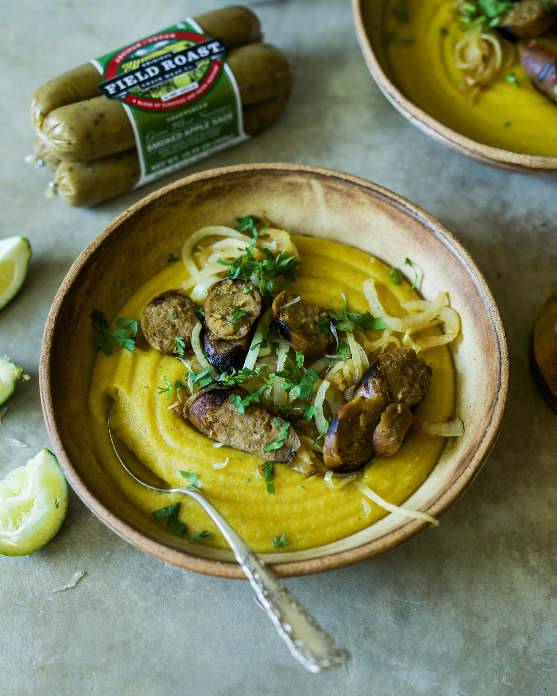

Curried Sausages

Ingredients:
- 1 tablespoon vegetable oil
- 1 onion, finely chopped
- 2 cloves garlic, minced
- 1 pound (about 500g) sausages, sliced into bite-sized pieces
- 2 tablespoons curry powder
- 1 tablespoon tomato paste
- 1 tablespoon all-purpose flour
- 1 cup (240ml) chicken or vegetable broth
- 1 cup (240ml) coconut milk
- 1 large carrot, peeled and sliced
- 1 large potato, peeled and diced
- Salt and pepper to taste
- Fresh parsley, chopped (for garnish, optional)
- Cooked rice or crusty bread (for serving)
Instructions:
- Cook the Sausages:
- In a large skillet or frying pan, heat the vegetable oil over medium heat.
- Add the chopped onion and minced garlic, sautéing until the onion is soft and translucent.
- Brown the Sausages:
- Add the sliced sausages to the skillet and brown them on all sides.
- Add Curry Powder and Tomato Paste:
- Sprinkle curry powder over the sausages and stir to coat them evenly.
- Add tomato paste and continue to cook for 2-3 minutes, allowing the flavors to meld.
- Make the Sauce:
- Sprinkle flour over the sausage mixture and stir well to combine.
- Gradually add the chicken or vegetable broth, stirring constantly to avoid lumps.
- Pour in the coconut milk and bring the mixture to a gentle simmer.
- Add Vegetables:
- Add the sliced carrot and diced potato to the skillet.
- Simmer the mixture until the vegetables are tender, and the sauce has thickened to your liking. This usually takes about 15-20 minutes.
- Season and Garnish:
- Season the curried sausages with salt and pepper to taste.
- If desired, garnish with fresh chopped parsley for a burst of freshness.
- Serve:
- Spoon the curried sausages over cooked rice or serve with crusty bread on the side.
Back